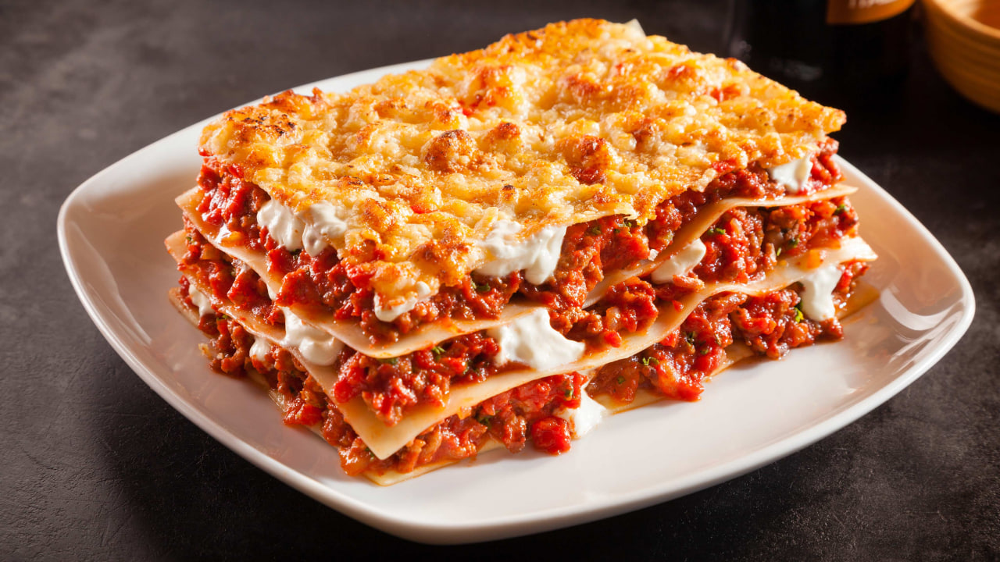

приготовление:
-
Для соуса болоньезе крупно нарезать 50 г бекона. Очистить и крупно нарезать 1 красную луковицу, 1 зубчик чеснока и 1 морковь, нашинковать 4 стебля сельдерея. Измельчить овощи с беконом в кухонном комбайне или блендере.
-
Разогреть в сотейнике немного оливкового масла. Выложить измельчённую смесь и готовить 10 минут, периодически помешивая. Добавить листья 1 веточки розмарина. Когда овощи станут мягкими, добавить 400 г говяжьего фарша и обжаривать ещё 10 минут, разбивая комочки.
-
Влить 100 мл красного вина, добавить 600 г помидоров в собственном соку, хорошо посолить и поперчить. Увеличить огонь и довести соус до кипения, затем тушить на среднем огне около 30 минут до нужной консистенции.
-
Разогреть духовку до 180 °C. Для соуса бешамель влить 700 мл молока в небольшую кастрюлю, добавить 2 лавровых листа, щепотку соли и перца. Довести почти до кипения и снять с огня.
-
В другой кастрюле растопить 30 г сливочного масла, добавить 1,5 ст. л. муки и перемешать до состояния пасты. Понемногу вливать горячее молоко, тщательно перемешивая после каждой порции. Удалить лавровые листья и варить бешамель 5 минут на слабом огне. Добавить 50 г тёртого пармезана, 0,75 ч. л. мускатного ореха, соль и перец, хорошо перемешать.
-
Смазать форму оливковым маслом и равномерно распределить по дну треть соуса болоньезе. Выложить часть листов для лазаньи, не накладывая их друг на друга, затем добавить треть соуса бешамель. Повторить слои ещё два раза, используя всего 150 г листов для лазаньи.
-
Распределить сверху 125 г моцареллы и оставшиеся 25 г пармезана, добавить по щепотке соли, перца и мускатного ореха. Накрыть форму фольгой и запекать 30 минут. Убрать фольгу и готовить ещё 15–20 минут до золотистой корочки.